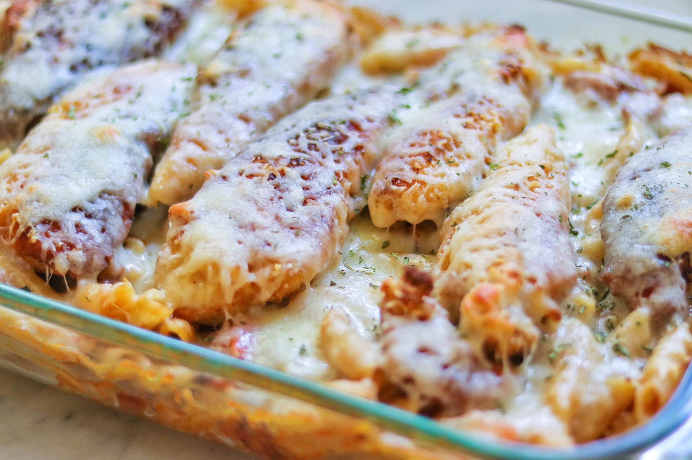

Anthony's Chicken
Lightly breaded chicken breast covered with a honey mustard barbeque sauce containing chopped bacon, diced tomatoes and onions. This dish is baked over pasta topped with Monterey Jack cheese.
List of Ingredients
- 1 pound dry penne pasta
- 2 eggs.
- ½ cup milk.
- salt and pepper to taste.
- 6(4 ounce) skinless, boneless chicken breast halves.
- 1 cup bread crumbs.
- ½ cup olive oil for frying.
- 2 tablespoons butter.
- 1 pound sliced bacon.
- 2 tomatoes, diced.
- 1 onion, diced.
- 1 (18 ounce) bottle honey mustard barbecue sauce.
- 3 tablespoons spicy brown mustard.
- 1 (8 ounce) package shredded Monterey Jack cheese.
Directions
✓ Step 1
Preheat the oven to 350 degrees F (175 degrees C). Bring a large pot of lightly salted water to a boil. Add pasta and cook for 8 to 10 minutes or until al dente; drain. Transfer to a deep 9x13 inch baking dish.
✓ Step 2
In a medium bowl, whisk together the eggs and milk. Season with salt and pepper. Dip the chicken breasts in the egg mixture, then roll in bread crumbs to coat. Heat the olive oil and butter in a large skillet over medium-high heat. Fry chicken breasts until the juices run clear, and they are well browned on both sides. Remove to paper towels to drain. Drain excess oil from the chicken pan, leaving it coated.
✓ Step 3
While the chicken is cooking, place bacon in a large, deep skillet. Cook over medium-high heat until crisp. Remove bacon from pan, crumble and set aside.
✓ Step 4
Place the skillet that used to have chicken in it over medium heat. Add tomato, onion and bacon, and cook for about 5 minutes, or until onion is soft. Pour in the barbeque sauce and spicy mustard. Simmer for 5 minutes. Pour the sauce over the pasta in the dish, then place the chicken on the top, and cover with shredded Monterey Jack cheese.
✓ Step 5
Bake for 15 to 20 minutes in the preheated oven, until cheese is melted and dish is heated through.